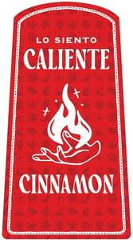

Trade Mark Journal No.2026/005 30 January 2026
WO0000001896766 (33)
Office of origin: United States of America

The mark consists of a red rectangular shape with rounded corners with tapered sides so the top is slightly narrower than the bottom; a white line tracing just inside the outer edge of the entire design creates a border; inside the white border at the top of the design are the words "LO SIENTO" in white stylized font and underneath that is the word "CALIENTE" in white stylized font; below that wording is stylized image of the outline of a hand with the palm facing upward below a flame in white; at the bottom of the design is the word "CINNAMON" in white stylized font; the background of the design consists of rows of stylized drawings.
Registration of this designation shall give no right to the exclusive use of the words 'CALIENTE' and 'CINNAMON'
The mark contains the colours white and red.
The mark consists of a red rectangular shape with rounded corners with tapered sides so the top is slightly narrower than the bottom; a white line tracing just inside the outer edge of the entire design creates a border; inside the white border at the top of the design are the words "LO SIENTO" in white stylized font and underneath that is the word "CALIENTE" in white stylized font; below that wording is stylized image of the outline of a hand with the palm facing upward below a flame in white; at the bottom of the design is the word "CINNAMON" in white stylized font; the background of the design consists of rows of stylized drawings.
- Class 33
- Alcoholic beverages, except beer.
Lo Siento Inc.
Representative: Sheila Fox Morrison Davis Wright Tremaine LLP, 560 SW 10th Avenue, Suite 700, Portland OR 97205, UNITED STATES OF AMERICA